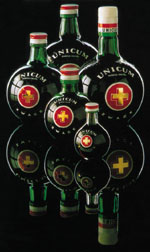

Wichtig ist bei allen j�dischen K�chenprodukten, dass
das verarbeitete Material und auch die Verarbeitungsmethode
koscher sind. Dabei bedeutet koscher sowas wie passend oder zul�ssig.
Qualitativ hochwertige Zutaten
werden verwendet, bei denen ein Rabbi nichts beanstanden kann, unabh�ngig davon, ob der Gast den
Qualit�tsunterschied merken kann oder nicht. So r�hrt man m�glichst
koscheren Wei�wein statt Wasser in den Kochtopf oder in den Kuchenteig und jeder Koch versucht
sein Produkt zus�tzlich mit seinem eigenen i-T�pfelchen zu bereichern. Wer
dann am Tisch herausschmecken kann, ob der Wein tats�chlich koscher
war oder nur Wasser, verdient mindestens eine silberne Zitrone.
Die Vorschriften �ber die
von Juden verzehrbare, koschere Lebensmittel reichen ins alte Israel
zur�ck und beziehen sich auf die Bibel. Die meisten Vorschriften f�r
religi�se Juden befinden sich im 5. Buch Mose und man kann diese
in drei Gruppen zusammenfassen:
Nur koscheres Fleisch ist zum Verzehr
geeignet, dazu z�hlen: Rind, Schaf, Ziege, Rotwild, Gazelle,
Damwild, Wildziege, Antilop, Steinbock. Unrein wird das Fleisch
von gefallenen oder zerrissenen Tieren betrachtet, hierzu z�hlen
Hase, Kamel, Pferd, vor allem jedoch das Schwein, das so unrein
sein soll, dass man es nicht einmal ber�hren darf. Unter
Gefl�gel ist lediglich das Strau�fleisch unrein, andere sind
koscher. Fisch ist nur mit Schuppen koscher, schuppenlose
Fische, wie Aal, Wels und die meisten Meeresfische.
Das Fleisch muss ausgeblutet werden,
davon ist alles verzehrbar. Ein ausgebildeter Sakter (dt.
Schlachter) muss daf�r sorgen, dass das Tier durch einen
einzigen Halsschnitt erl�st m�glichst wenig leidet und dabei
sein Herz noch richtig schl�gt, damit das Tier m�glichst
vollst�ndig ausblutet. Um Blutreste oder gar geronnene
Blutklumpen zu vermeiden, wird das frische Schlachtfleisch
zuerst eine halbe Stunde lang in Wasser, anschlie�end eine
Stunde lang in Salz gelegt und anschlie�end dreimal ausgesp�lt.
Fleisch- und Milcherzeugnisse m�ssen
getrennt aufbewahrt werden und d�rfen auch bei der Zubereitung
der Speisen nicht miteinander in Ber�hrung kommen. Das betrifft
sogar alle Ger�te und Utensilien in der K�che bis zum
Speisetisch. Bei dieser Vorschrift scheiden sich die Gester und
Juden streiten sich ewig �ber unz�hlige Kleinigkeiten
miteinander, wer religi�s oder abtr�nniger und was koscher sein
soll oder nicht.
Unz�hlige Spezialit�ten werden nach dazu
erkorenen Sitten und Traditionen verzehrt. Das betrifft die Art und
Weise von Getr�nkeverzehr, ja sogar nach Geschlechten getrennt
unterschiedlich und zu jedem Anlass anders. Beispiele f�r
koschere Speisen, Sitten und Traditionen:
Freitag abends vor dem Sabbat verspeist
man gew�hnlich gef�llten Fisch und Hefezopf dazu.
Am Passahfest erinnern die Juden an die
Befreiung ihres Volkes aus der �gyptischen Sklaverei. In dieser
Woche wird nur Unges�uertes gegessen.
Am 25. Tag des
Monats Kislev wird weltweit das Lichterfest Chanukka
gefeiert. In diesen Tagen erinnern sich die Juden an die wunderbare
Rettung Israels im sog. Makkab�er Aufstand im Jahre 165 v.Chr. Judas
Makkab�us und seine vier Br�der besiegten damals die griechische
Syrer Dynastie der Seleukiden. Ein Jahr sp�ter wurde der
zwischenzeitlich gereinigte, von den griechischen G�tzen befreite
Tempel neu eingeweiht und die obersten Rabbiner begannen mit der
Niederschrift der Bibel, dessen �ltere Teil, das Alte Testament die
Geschichte des j�dischen Volkes ist. Soweit man die bekannten
Legenden zusammenfassen konnte, befindet sich die Welt demnach im
ausgehenden 6. Jahrtausend. Neulich fand man den Stein Moses in der
W�ste und stellte erstaunt fest, der sei um 1.500 Jahre j�nger als
in der Bibel beschrieben und seitdem schweigen die Gelehrten �ber diesen Fund.
Unz�hlige steinerne Dokumente aus Mesopothamien wurden in das Alte
Testament als eigene Geschichte �bertragen, als wenn die Juden damit
zu tun h�tten. Solche Beweise l��t man zur Zeit von Islamisten
vernichten, aber auch dar�ber schweigt man.
Wie auch immer, bei der Neueinweihung (=Chanukka) des Tempels sollte
dieser beleuchtet werden. Daf�r fand man nur soviel �l, das nur einen
Tag lang brennen konnte. Es geschah jedoch ein Wunder und die Flamme
brannte 8 Tage lang. Zur Erinnerung daran besitzen alle j�dische
Familien einen achtarmigen Kerzenst�nder, dessen Kerzen nur zum
Chanukkafest entz�ndet werden d�rfen, t�glich eine Kerze mehr, bis
alle 8 Kerzen brennen.
Zum Neujahrsfest werden
aus dem Hefezopf St�cke abgetrennt, in Honig getunkt verzehrt,
damit das neue Jahr ein s��es Jahr wird.
Gew�rze, Getreide, Speise�l, Fleisch-
und Milchprodukte sind nur aus geschlossenen Beh�ltern koscher.
Bibeltreue beharren darauf, dass nur
G�nsefett koscher sein soll, allm�hlich setzt sich jedoch das Speise�l
durch, aber auch dabei gibt es Unterschiede, was koscher ist
oder nicht. Geeignet aus dem Handel sind
beispielsweise das
Oliven�l der Marke
Bertolli, in Ungarn der Marken
Floriol und das Sonnenblumen�l der Marke
V�nusz. Sollte ein Rabbi kontrollieren, dann pr�ft er, ob die
�lm�hle nur f�r koschere Produkte verwendet wird und darin das �l mit tierischen Fetten in Ber�hrung kommt.
Das Mehl f�r Backprodukte muss
durch einen Feinsieb zur Sicherstellung, dass darin keine, oft
nur duch starke Brille sichtbare Insekten vorkommen, wie allzu
h�ufig im Mehl aus deutschen Lebensmittelgesch�ften.
Das aufgeschlagene Ei muss sofort
kontrolliert und notfalls entsorgt werden, wenn darin sichtbare
Blutflecken sind, wie meistens in den Eiern mit wei�er Schale.
Backofen sollte vor Benutzung gr�ndlich
gereinigt und dadurch koscher werden.
K�chenger�te werden nur f�r koschere
Produkte benutzt und d�rfen mit nicht koscheren nicht in
Ber�hrung kommen. Nach einer solchen unreinen Ber�hrung sind sie
nicht mehr koscher und m�ssen entsorgt werden. Das betrifft
Sp�lb�rsten und Sp�lschw�mme ebenso.
Frischhefe ist koscher, Trockenhefe
nicht. - Diese Vorschrift entstammt von Moses und beruht
ihmzufolge auf alt�gytische Gepflogenheiten, als man noch einen
Vorteig machen musste vor dem Kneten. Ein Vorteig ist aber mit
gesundem Menschenverstand von der technischen Entwicklung l�ngst
�berholt, auch wenn ein Vorteig heute noch immer aus
Unwissenheit �ber das Warum - nicht nur von Juden - gemacht
wird. Die einzige Ursache f�r einen Vorteig war die Pr�fung beim
Kauf der Frischhefe von H�ndlern, aber auch nach der darauf
folgenden Lagerung, ob diese den Teig noch immer hochgehen l�sst
oder schon verdorben sei. Das war unter den klimatischen
Verh�ltnissen im damaligen �gypten sicherlich notwendig, als man
den K�hlshrank und die Trockenhefe noch nicht kannte.
Nach einer altj�dischen Tradition muss
von jedem Backprodukt ein St�ck abgerissen und gesegnet weden,
diese anschlie�end gesammelt und vor dem Passahfest verbrannt
werden.
Der Verzehr von alkoholischen Getr�nken
unterliegt bei religi�sen Juden bestimmten Regularien. So darf
nur Wein getrunken werden, wenn er aus koscherem Most vom
j�dischen Weinberg vergoren wurde. Den Verzehr von koscherem
Wein soll Noah und der von Pflaumenschnaps K�nig Salomon
genehmigt haben.
Wenn man Wasser in einer Gesellschaft
trinkt, dann soll das niemand sehen, also umdrehen! Verheiratete
Damen d�rfen den Wein nur im Beisein des Ehemannes und nur
langsam schluckweise schl�rfen, nicht wie ein Schluckspecht!
Matze / Macesz
Am Passachfest erinnern die Juden an die
Befreiung ihres Volkes aus der �gyptischen Sklaverei. In dieser
Woche wird nur Unges�uertes gegessen - so auch die Matze. Bei der
Zubereitung l�uft die Stoppuhr in der gezeigten Backstube. Das Brot muss in 18
Minuten fertig sein - so die Arbeitsregeln in der hier vorgef�hrten
Backstube. Dass es schnell sein muss, geht aus der Bibel hervor,
aber die 18 Minuten erscheinen uns eher als Sklaventreiberei:
Wie das unges�uerte Brot bei uns zuhause
zubereitet werden kann, zeigt das folgende Demonstrationsvideo:
Zutaten: 200 g
Dinkelmehl, 200 g Buchweizenmehl, 1 TL Salz, 250 ml Wasser, 3 EL
Oliven�l zum Bestreichen.
Zubereitung: Mehl, Salz
und Wasser zum Teig verkneten. Je nach Gr��enwunsch in 3-4
gleichgro�e St�cke teilen, diese in Kugeln formen, einzeln in ca. 1
cm dicke Fladen ausrollen und aufs Backblech legen. Mit Oliven�l
bestreichen und im vorgew�rmten Backofen bei 240�C ca. 20 Minuten
backen. Etwa nach H�lfte der Backzeit umdrehen.
Challah, Sabbatbrot / B�rhesz, Szombati kal�cs
Der
Ursprung liegt im Alten Testament als Challah, ungarische
Juden bezeichnen ihren Hefezopf als B�rhesz, szombati kal�cs
auf Ungarisch, bzw. Sabbatbrot auf Deutsch. Bibeltreue Juden
backen Challah - s�� oder salzig - nur zu Feierlichkeiten,
B�rhesz freitags zum Sabbat. Wichtig ist dabei, dass man nur
koschere Zutaten verwendet, hierzu beispielsweise
feingesiebtes Mehl, keine Milchprodukte wie Butter, frische
und keine Trockenhefe aus der modernen K�che. Den Challah gibt
es nach alter Tradition rund (n�chstes Rezept) oder im
Zopfmuster.
Wir zeigen das folgende Video, weil
darin alles nach j�discher Tradition vorgef�hrt und auf
Deutsch erkl�rt wird, obwohl nicht alle Zutaten koscher sind,
daf�r aber die Seele baumeln lassen f�r die Bereicherung des
Sabbatbrotes. Abweichend vom Video enth�lt unsere Zutatenliste
und die Beschreibung der Zubereitung nur koschere
Vorschriften. In Ungarn reicht, wenn man den Teig einmal gehen
l�sst, in Deutschland ist es dreimal erforderlich,
wahrscheinlich wegen der schw�cheren deutschen Hefe:
Zutaten: 500 g
Weizenmehl, 1 Hefew�rfel (ungarische Hefe wirkt st�rker, dort
reicht eine halbe W�rfel), 100 g
Zucker, 1 Prise Salz, 50 ml Oliven�l,
100 ml lauwarmes Wasser.
Zutaten zum
Bepinseln:
1 verr�hrtes Ei.
Zubereitung:
Alle Zutaten langsam kneten, mit der Hand
ca. 20 Minuten oder mit einer Knetmaschine nach Anweisung.
Sch�ssel mit K�chentuch abgedeckt
an einer warmen Stelle in 60 Minuten auf doppelte Gr��e
gehen lassen.
Den Teig aus der Sch�ssel nehmen,
auf einer Arbeitsfl�che zu einem eher h�rteren Teig kneten,
erneut an einer warmen Stelle eine halbe Stunde lang gehen
lassen.
In drei gleiche St�cke teilen,
diese zu Str�ngen rollen und zu einem Zopf aufwickeln, wie
im Video.
Den Zopf auf ein gefettetes
Backblech oder Backpapier legen, an einer warmen Stelle
gehen lassen.
Mit dem verquirlten Ei bepinseln und
im vorgew�rmten Backofen bei
175�C oder im Umluftherd bei 160�C 30-45 Minuten lang backen.
Neujahres
Challah / �j�vi hallah, �j�vi B�rhesz
...eine
Neujahrstradition, die seit Ewigkeiten auf Aberglaube beruht.
F�r die Sylvesternacht wird Challah in
spezieller Form gebacken, damit alle, die das Neujahr zusammen
begr��en, m�glichst portionsweise einzelne St�cke davon abrei�en
und in Honig getunkt verspeisen k�nnen. Infolgedessen wird das
Neujahr besonders s�� - nach einem uralten Aberglaube.
Die Tradition soll
bei den ungarischen Juden schon seit Ewigkeiten zu den
Feierlichkeiten in der Sylvesternacht geh�ren. F�r religi�se Juden ist es wichtig, dass das Neujahrsbrot
koscher ist.
F�r die Demonstration der Zubereitung
fanden wir bisher nur t�rkische Videos �ber das t�rkische
Fladenbrot Pide, das zwar nicht koscher ist, daf�r aber
nach dem gleichen Rezept aus den gleichen Zutaten ohne Gebet zubereitet wird. Pide geh�rt bei Moslems zu
den Feierlichkeiten des Ramadans. Da wirft sich schon die Frage
auf, wie bei allen j�dischen B�ckereiprodukten, wodurch diese
j�disch sein sollen oder doch von anderen abgekupfert
wurden. Gerade die in Ungarn verwendeten Zutaten f�r den Belag
sprechen daf�r, dass etwas eher von anderen abgekupfert wurde.
Das Beharren auf die alt�gyptische Erfindung Frischhefe spricht
B�nder �ber koscher oder nicht koscher in einer Zeit, als
Trockenhefe schon lange erprobt und nachgewiesenerma�en die
gleiche Wirkung hat. Auch das tats�chliche, um rd. 1.500 Jahre j�ngeres Alter des in der
�gyptischen W�ste aufgefundenen Stein Mose spricht B�nder �ber die
Zuverl�sslichkeit der Angaben im Alten Testament, das man erst etwa 170 v.Chr.
�ber die damals vermeintlich vergangenen rd. dreieinhalb Jahrtausende zusammenzuschreiben begann.
Zutaten wie bei Challah:
500 g
Weizenmehl, 1 Hefew�rfel (ungarische Hefe wirkt st�rker, dort
reicht eine halbe W�rfel), 100 g
Zucker, 1 Prise Salz, 50 ml Oliven�l,
100 ml lauwarmes Wasser.
Zutaten
f�r den Belag: Ein s��licher Belag wird dar�ber gepinselt
oder nach den anderen Zutaten dar�ber getr�pfelt aus einer Mischung von Ei, Zucker,
Wasser und Oliven�l.
Evtl. weitere Zutaten k�nnten sein, wie auf dem Pidebrot:
Sesamk�rner, Kreuzk�mmel, Hagelzucker und Mandelbl�tter, darauf kommt es
jedoch nicht an. In Ungarn werden h�ufig
ungemahlene Blaumohn- und Sesamk�rner verwendet.
Zubereitung: Entnehmen
Sie bitte aus dem Video.
J�dische Eier / Zsid� toj�s
Das Gericht soll koscher sein durch die
Verwendung von G�nsefett, wenn die Eier von koscheren V�geln
stammen, ansonsten ist es identisch mit den
gef�llten Eiern, die man kleinw�rfelt und in Deutschland gerne mit
Mayonnaise garniert - siehe unter Kalte
K�che.
Zubereitung: Die
Eier hart kochen, sch�len und klein w�rfeln oder mit der Gabel
zerdr�cken. Die Zwiebel klen hacken oder reiben. Die restlichen
Zutaten dazu mischen. Die Mixtur soll mindestens 1 Stunde im
K�hlschrank reifen, danach mit Senf und Salz erneut abschmecken.
Tipps:
Das Rezept wird von Haus zu Haus mit unterschiedlichen Zutaten
bereichert, wie H�hner- oder G�nseleber, G�nsegrammeln, neulich kommen
Petersiliengr�n, Muskatnu�- und Paprikapulver in Mode.
Schalet / S�let
Wird auf Deutsch unterschiedlich
geschrieben, so Tscholent, Cholent u.a. Die Bezeichnunng entstammt
aus dem franz�sischen "chaud lit".
Unter den traditionellen j�dischen
Gerichten ist Schalet an erster Stelle zu nennen. Religi�se
Vorschriften f�hrten zur Entwicklung der Rezeptur f�r ein nicht nur
von Juden
beliebtes Gericht. Schalet
ist ein Wort franz�sisch-jiddischen Ursprungs f�r Bohnentopf oder
Bohnengulasch mit Rindfleisch, davon immer Beinscheibe und Brust, ger�ucherte G�nsekeule u.a.
Es gibt
auch regionale Varianten von Schalet. W�hrend der urspr�ngliche, auf
j�dische
Tradition basierende Schalet mit dem bayerischen Bohnengulasch mit Schweinshaxe
zum Verwechseln �hnlich ist, kennt man im
Badisch-Hessisch-Els�ssischen Raum Kartoffel- und Apfelschalet, die
in dieser Region von Christen und Juden gleicherma�en gerne verzehrt
werden, aber v�llig andere Rezepturen haben. Kartoffel- und
Apfelschalet haben keinen religi�sen Hintergrund.
Der
j�dische Schalet ist ein beliebter Bohneneintopf, dessen besondere
Zubereitungsmethode den Genu� einer k�stlichen warmen Mahlzeit ohne
Arbeit am Sabbat erm�glicht. Er wird traditionell in einem gr��eren
Topf aus Steingut zubereitet. Dabei wird die Vorschrift von Moses
ber�cksichtigt, nachdem man am Sabbat kein Feuer anz�nden und zudem
nicht arbeiten darf. Beide Vorschriften werden eingehalten, indem das Feuer unter dem Bohnentopf
bereits am Freitag angez�ndet wird und man das Essen nach
einer bis zu 12st�ndigen Backzeit zur Mittagszeit am
Sabbat servieren kann. - �blicherweise reichen 3-4 Stunden im
Backofen, aber einen Bohneneintopf kann man bei geringer W�rme
l�nger k�cheln lassen. Je �fter der Topf erw�rmt wird, umso besser schmeckt
das Essen - wie auch die warmen Krautgerichte
Szegediner Gulasch und Gef�lltes Kraut bzw. Kohlroulade der
Ungarn. Da nicht jeder einen Steinofen besitzt und der Schalet lange
warm bleiben soll, entstand eine Methode bereits im
Mittelalter,
indem man das fertige Gericht samt Steingut in dicke Bettdecken
wickelte. So blieb das Essen lange warm, u.U. k�chelte sogar weiter
und blieb mindestens bis Mittag ofenwarm. Durch die lange Kochzeit
schmeckt der Schalet einmalig gut. In seiner Begeisterung
beschrieb der Dichter Heinrich Heine im Jahre 1851 in seinem Vers Prinzessin Sabbat
folgendes:
"Schalet, sch�ner G�tterfunken, Tochter aus Elysium!"
....siehe weiter dort.
Das jiddische Wort
Schalet stammt keinesfalls aus der synonym klingenden Ober- oder Unterschale des
Rindes. Es entstammt aus dem
franz�sischen Begriff "chaud lit" f�r dieses Gericht, das warmes Bett bedeutet.
Gemeint war
damit dieses in einem warmen Bett fertiggekochte Bohnengericht. Die franz�sische Bezeichnung
wurde bis ins 10. Jahrhundert nachgewiesen.
�ber die Art und Weise der Zubereitung streiten sich vor allem
die religi�s besonders gelehrten Juden. Viele entwickeln laufend neue
Theorien, was koscher sein soll bei der Zubereitung von Schalet.
W�hrend die einen das zum Einweichen der Bohnen ben�tigte Wasser
mitkochen, andere bestehen darauf, diese geschmackgebende
Fl�ssigkeit unbedingt zu entsorrgen, weil diese Strassenstaub
enthalten k�nnte und das sei nicht rein. Dabei denken diese nicht
soweit, dass die Bohnen vor dem Einweichen wom�glich gewaschen werden. Dummheit
und Wissenspantscher treffen aneinander nicht nur bei dieser Frage.
Es gibt sogar Oberkluge, die eine bestimmte Farbe der Bohnen
ablehnen oder auf die Verwendung von Paprikapulver unter den Zutaten
bestehen, weil das traditionell sein soll. Da stellt sich die Frage,
wo war Paprika in der vorkolumbianischen Zeit, als die traditionelle j�dische K�che
mit dem Schalet schon Bestand hatte. Ein weiterer Anla� zur
Streitigkeit gibt die Menge der verwendeten Kochfl�ssigkeit. Die
einen m�gen eine Suppe, andere eher einen schweren Eintopf.
Letzterer hat den Vorteil(?), dass man danach mindestens eine Woche
lang keinen Schalet mehr sehen kann. Im Allgemeinen gilt: als Gast
sollte man niemals Kritik �ber das Essen aus�ben, weil schon ein
altes Sprichwort besagt: "Schalet wird dem Gast entsprechend
zubereitet!"
Auch wenn die Zutaten nicht alle koscher
sind, es ist das
beste Video �ber die Zubereitung von Schalet, das wir f�r die
Demonstration bei YouTube
finden konnten. Die Zutaten und die Zubereitung eines koscheren
Schalets beschreiben wir unter dem Video:
Zutaten: 500 g wei�e
Bohnen, 500 g bunte Bohnen, 250 g Gerstengraupen, 2 gro�e Zwiebeln,
5-10 Knoblauchzehen, 3 Lorbeerbl�tter, 2 Beinscheiben vom Rind, 1 kg
Rinderbrust, 2 ger�ucherte G�nsekeulen, 2 ger�ucherte
Truthahnkeulen, 5 Eier, 5 EL G�nseschmalz, Salz, Pfefferpulver.
Zubereitung: Die Bohnen waschen, die bunten
Bohnen 12 Std. vor dem Kochen in Wasser legen. Zwiebeln in grobe Scheiben
schneiden, in G�nseschmalz leicht schmoren, direkt im Kochtopf. Nun
kann man alle Fleischst�cke im Topf leicht anbraten. Die bunten
Bohnen mit dem Weichwasser zusammen dar�ber gie�en, die wei�en
Bohnen, Gerstengraupen dar�ber streuen. Die zerdr�ckten
Knoblauchzehen und die Lorbeerbl�tter dazugeben. Wer den Bohneneintopf
besonders lange backt, kann das Fleisch ohne Anbraten �ber die
Bohnen und Gerstengraupen verteilen. Beinscheiben, Rinderbrust und die
ger�ucherten Gefl�gelschenkel werden obenauf verteilt. Leicht salzen
und pfeffern. Mit Salz muss man vorsichtig sein, denn die
ger�ucherten Gefl�gelschenkel schon reichlich Salz liefern. Den Topf
mit soviel Wasser auff�llen, dass alles bedeckt wird. Zuletzt gibt
man die gr�ndlich gewaschenen Eiern in ihren unversehrten Schalen
dar�ber. Deckel darauf und ab in den Steinofen. Die Zutaten darf man
nicht umr�hren, sonst platzen die Bohnen. Stattdessen kann man den
Topf gelegentlich sch�tteln. Wer kein Steinofen hat und 10-12 Stunden lang
k�cheln will, w�hlt 80�C Ofentemperatur, pr�ft und f�llt
gelegentlich die Fl�ssigkeit nach. Erfahrene Schaletk�che wissen
schon im Voraus, wieviel Kochfl�ssigkeit die Bohnen im Ofen
ben�tigen.
Foie Gras,
G�nseleber / Libam�j
...gemeint ist
stets die Stopfleber, ein wichtiger Wirtschaftsfaktor in Ungarn.
G�nseleber-Angebot in der Gro�en
Markthalle von Budapest. Das Sortiment am Bild links ist bei
Touristen aus Frankreich begehrt, vor allem wegen der g�nstigen
Preise. Frische G�nseleber bekommt man hier ebenso, dazu
empfehlen wir jedoch eine andere Markthalle, die Lehelpiac genannt
wird. Dort ist man am Rande des j�dischen Stadtviertels
"�jlip�tv�ros" und die Ware ist nicht nur am frischesten, sondern
deutlich preisg�nstiger, als in der von Touristen �berf�llten
Gro�en Markthalle.
Man findet unz�hlige Beschreibungen f�r
die Zubereitung der G�nseleber im Internet und in Kochb�chern. Wir
haben schlechte Erfahrung damit und k�nnen best�tigen, dass sie
meistens voneinander abgekupfert werden und so sicherlich nicht
funktionieren. Den besten Tipp bekamen wir von einem Gefl�gelmetzger
in der Markthalle "Lehel Piac" in Budapest und von Tante Kl�ri und
Onkel Bruno, die gerade da waren, als wir dem Metzger zuh�rten. Im
Gegensatz zu den komplizierten Beschreibungen ist demnach die
Zubereitung viel einfacher.
Wichtig beim Kauf
von G�nseleber ist, dass man gewichtsm��ig die gleiche Menge
G�nsefett, vorzugsweise G�nseflohmen dazu kauft, weil die Leber im
frischen G�nseschmalz gebraten werden soll. Man kann zwar
G�nseschmalz f�r die Zubereitung kaufen, aber darin gebraten
schmeckt die Leber nicht so gut. Wer G�nsegrammeln auf der
Brotzeitplatte mag, soll sich noch mehr Flohmen besorgen und
darunter auch welche mit der Haut zusammenh�ngen. Solche Grammeln
sind besonders knusprig.
Zubereitung:
Das G�nsefett wird in 2 bis 4 cm gro�e W�rfeln geschnitten, bei
m�glichst geringer Hitze ausgeschwitzt und so in G�nseschmalz und Grammeln
getrennt.
G�nsegrammeln - Die
Grammeln sind ein Kapitel f�r sich, eine Delikatesse auf der
Brotzeitplatte. Wer sie mag, soll diese nach dem Ausschwitzen nicht
auspressen oder nur ein bischen zudr�cken. Man kann zu Ende des Ausschwitzens sehr wenig Wasser
dazugeben, damit die Grammeln knusprig werden. In diesem Fall sollte
man das Fett nach dem Aussch�pfen der Grammeln etwas l�nger k�cheln
lassen, damit das Wasser verdampft. Bei dieser Methode des
Knusprigbratens mit Wasserzugabe besteht die Gefahr, dass das
G�nseschmalz "verbrennt", danach verbrannt riecht und daher
ungeeignet ist f�r die Zubereitung der G�nseleber. Besser ist daher,
wenn man die Grammeln aus dem Fett sch�pft und sie in einer Pfanne
knusprig br�t. Dazu soll man die Grammeln mit einem Bratwender ein
wenig platt dr�cken, damit diese im eigenen Fett anr�sten. Ideal
sind die Grammeln, wenn sie beginnen, eine br�unliche Farbe
anzunehmen. Ausgek�hlt geh�ren sie auf die Brotzeitplatte, wie die
G�nseleber selbst. Wer die Grammeln nicht verzehren will, kann mehr
Fett daraus pressen und sie z.B. bei der Zubereitung von
Grammelnpogatschas verwenden.
G�nseleber
- Das Schmalz wird zuerst ausgek�hlt und geh�rt in den K�hlschrank.
Die G�nseleber wird mit dem ausgek�hlten
G�nseschmalz zusammen in einem Topf behutsam erw�rmt. Man nimmt dazu soviel Fett, dass die
Leber davon immer bedeckt bleibt. Das Fett soll nun langsam k�cheln
und wenn man denkt, bald ist es soweit, �berpr�ft man gelegentlich den Bratfortschritt, indem man einen
Zahnstocher tief in die Leber sticht. Tritt dabei keine rosafarbene
Fl�ssigkeit mehr aus der Leber, �berpr�ft man sicherheitshalber auch
die Unterseite mit dem Zahnstocher. Bleibt der Zahnstocher trocken,
ist die Leber fertig gebraten.
Unser Serviervorschlag: G�nseleber
wird meistens auf einer Brotsscheibe kr�ftig gesalzen und so
verzehrt. Auf der Brotzeitplatte serviert man
zu G�nsegrammeln und auch zur Leber am besten Schalotten oder rote Speisezwiebeln,
Tomaten
oder Schnittlauch, letzteren evtl. in Quark verr�hrt. Wir empfehlen
dazu einen kr�ftigen Merlot aus Szeksz�rd, aus dem gleichnamigen
Weinbaugebiet.
W�rzmittel - Oft wird in den Rezeptb�chern
empfohlen, beim
Ausschwitzen des G�nseschmalzes oder beim Braten der G�nseleber das
Schmalz mit Zwiebel, Knoblauch, Salz oder Paprikapulver zu w�rzen. Wir
m�ssen davon abraten. Einerseits wird aus diesen W�rzmitteln kein
Geschmack in die G�nseleber �bergenommen, andererseits besteht die
Gefahr von unangenehmen Verunreinigungen, wodurch das G�nseschmalz
verdirbt.
Koscheres Essen/Halali Fleisch
- Es wird in der j�dischen Litratur oft empfohlen, die G�nseleber
vor dem Braten f�r einige Stunden in Milch zu legen, damit diese evtl.
noch vorhandenes Blut aus der Leber zieht, aber die Milch bleibt
erfahrungsgem�� immmer wei� von den Lebern, die
man am besten in der Markthalle "Lehel Piac" direkt an der
U-Bahnstation "Lehel t�r" in Budapest kauft, in
der N�he des Westbahnhofes, am Rande des j�dischen Stadtviertels
"�jlip�tv�ros" bzw. Neuleopoldstadt.
Leberpastete - Aus der G�nseleber kann man diverse Pasteten herstellen, worauf
wir hier nicht eingehen m�chten. Dabei stellt sich die Frage, ob
sich diese Arbeit lohne. Es lohnt sich in vermeidlich vornehmen
Restaurants, wie
Gundel im Stadtpark von Budapest, wo zahlungskr�ftige G�ste
begeistert sind, wenn man die G�nsepastete mit Malossol Kaviar toppt, evtl. noch etwas Honig darauf tr�pfelt
und dazu einige, m�glichst ausgefallene Sorten von Marmeladen
serviert. �blicherweise wird ein Rotwein zur G�nseleber empfohlen,
aber Gundel w�re nicht kulinarisch, wenn man dort nicht einen wei�en
Tokajerwein oder Champagner dazu empfiehlt. Die Arbeit f�r die
Pastetehnherstellung lohnt sich nicht,
wenn man zuhause oder in der Jagdh�tte die Zeit f�r einen Vergleich hat, ob jemand die
Pastete von der billigsten Kalbsleberwurst aus dem Supermarkt
unterscheiden kann. Sowas kommt schon vor, wenn man nach dem
Erklingen von G�nsejagd vorbei die Gl�ser auf den Jagdk�nig erhebt,
anschlie�end ein Leberwurstbrot mit Waln�ssen toppt
und darauf Honig tr�pfelt....
Brot - Wenn man die Literatur dar�ber liest, was f�r welche Brotsorten
zu G�nseleber passen, dann staunt man nicht zuf�llig. Es werden alle
Brotsorten genannt mit dem Motto, Hauptsache nichts
vergessen! Ob die Leber kalt oder bei Zimmertemperatur serviert werden
soll, auch dar�ber machen sich viele Gedanken. Dabei wird die G�nseleber
sogar schnitzelartig paniert und in allen Varianten warm bis
hei� in den Restaurants angeboten, beispielsweise auf einer
Grillplatte bei
V�r�s Postakocsi (Rote Postkutsche) in der R�day utca in
Budapest.
Getr�nke zur G�nseleber und -pastete -
Ein prickelnder Traminer, Welsch- oder Rheinischer Riesling,
Chardonnay oder f�r Schleckerm�ulchen ist ein Lindenblatt zu
empfehlen.
Ob es eine gesch�ftliche Zusammenarbeit der Weinh�ndler und
Gastronomen gibt, diese Frage wirft sich schon auf, wenn in den
Weinkellern im
Tokajer Weinbaugebiet und weit dar�ber hinaus immer-wieder G�nseleber zum Aszu bzw.
Ausbruchwein empfohlen wird, diese Frage wirft sich schon auf
- mehr dar�ber siehe hier ganz unten.
Nach
all dem Wissenswertes �ber Foie Gras zeigen wir ein Hausrezept,
das von den oben genannten Tipps insofern abweicht, dass bei der
Zubereitung Salz, Paprikapulver, Knoblauch verwendet wird - eine
riskante Methode, wie aus unserer Anleitung hervorgeht:
Foie Gras Confit / Libam�j zs�rj�ban
Zum Vergleich zeigen wir hier
eine andere Methode f�r die Zubereitung von Stopfleber:
Foie Gras Confit / Kacsam�j zs�rj�ban
Zum Vergleich zeigen wir hier
eine Methode zum Einlegen der normal gewachsenen Entenleber
im eigenem Fett:
Kalbsschnitten mit G�nseleber gef�llt / Libm�jjal t�lt�tt
borj�szelet
Zutaten: 10
handtellergro�e Kalbsschnitzel, 200 g G�nseleber, 2 Zwiebeln, 4
Paprikaschoten, 1 Ei, 5 EL Mehl, 150 g Fett, 100 ml Milch, 200 ml
Sauerrahm, 100 ml Sahne, 4 TL Gew�rzpaprikapulver, 1 TL
Pfefferpulver, 1 Prise Majoran, 20 g Salz.
Zubereitung: 1/2 Zwiebel kleingehackt in wenig Fett
d�nsten, zerkleinerte G�nseleber zugeben, mit Salz, Pfeffer und
Majoran w�rzen, mit 1 EL Mehl bestreuen und leicht anbr�unen. Mit
Milch auff�llen, mehrmals aufkochen und durch ein Sieb pressen.
In die Kalbsschnitzel Taschen schneiden. Die ged�nstetee
G�nseleber abschmecken, dasrohe Ei zugeben und die Schnitzel mit der
Farce f�llen. Die Taschen mit Rouladennadeln schlie�en. Die
Schnitzel in hei�em Fett anbraten und zur Seite stellen.
Paprikasauce: In einer Bratpfanne im restlichen
Fett die restlichen Zwiebeln fein hacken und im Fett glasig d�nsten,
mit Gew�rzpaprikapulver vermengen, mit 300 ml Wasser auff�llen,
salzen und aufkochen. Die gef�llten Schnitzel einzeln zugeben und
langsam schmoren lassen, dabei die Pfanne �fter sch�tteln. Die
Schnitzel aus der Pfanne nehmen, die Rouladennadeln entfernen und
warm halten.
Die Paprikaschoten in 1 cm Quadrate
schneiden, zum Sud in der Pfanne geben, ca. 10 Minuten lang d�nsten,
abschlie�end den Sud mit Sauerrahm und Sahne andicken und nach dem
Aufkochen erneut abschmecken. Die Sauce in einem Servierk�nnchen auf
dem Tisch bereitstellen.
Servieren:
die Schnitzel schr�g in 2-3 St�cke aufschneiden und mit der
Paprikasauce �bergie�en. Als Beilage kommen Sp�tzle, Nokedli bzw.
Knobben, gekochte Petersilienkartoffeln, ein Blatt- oder Krautsalat
in Frage.
Getr�nksvorschlag:
Welschriesling, Traminer, Lindenblatt, Portugieser oder Kadarka.
Fluden / Fl�dni
Das Wort Fluden entstammt aus dem deutschen Begriff f�r
Fladen, hat einen jiddischen Ursprung aus Schlesien und daraus ging in
Ungarn das Wort Fl�dni hervor. Nicht zu �bersehen ist, dass es sich
dabei um eine nicht aufgerollte, auf dem Backblech flach
ausgebreitete, reicher belegte Variante des ungarischen Beigli bzw.
Wiener Stolle handelt.
Koscher sein soll der Fluden mit Pflaumenmus in der
unteren Schicht, aber
so genau sieht man das heute nicht immer. Der
untere Kuchenboden wird oft mit Aprikosenmarmelade, bei den
Ausgewanderten im �bersee meistens mit Apfelkompott belegt. Eine Regel
oder Vorschrift gibt es f�r diese Torte nicht, die Reihenfolge von
4 bis 5 Tortenb�den und Bel�gen folgen dem aktuellen Gutd�nken des
Kuchenb�ckers.
....So bekommt man
Fl�dni im
Konditoreicaf� Sommer in Budapest. Die F�llungen von unten:
Walnu�, Mohn, Kompott, Apfelmus.
Am ersten Abend des Chanukkafestes geh�rt
der Fluden auf den Tisch im osteurop�ischen Raum, aber auch zu
besonderen Anl�ssen wird er aufgetischt, wie am Bild links zum
Geburtstag. Dieses Bild erkl�rt zugleich, warum Fluden trotz
Blechkuchenform als Torte bezeichnet wird. Er wird in
Ungarn in der Tat gelegentlich tortenf�rmig rund zubereitet, so
spricht man immer von einer Torte.
....und so liefert
das
Konditoreicaf� Sommer in Budapest Fluden zu besonderen
Anl�ssen, wie hier zum Geburtstag.
Der Ursprung des
Fludens liegt in der
Wiener Stolle bzw. das Beigli. Das Rezept ist identisch, die
Zutaten im Fluden sind jedoch reichhaltiger/wertvoller und man
achtet darauf, dass alle Zutaten koscher sind.
Fluden unterschiedet sich von Beigli, indem: 1. die Rolle
fladenf�rmig gebacken wird - daher die Bezeichnung Fladen bzw.
Fluden auf Jiddisch oder Fl�dni auf Ungarisch. 2. Da
Milchprodukte gemieden werden, wird Butter steets durch Margarine
oder anderes Fett ersetzt, ebenso der Sauerrahm. Alle anderen
Zutaten, die im Grundrezept von Beigli vorkommen, findet man im
Fluden genauso. Fluden wird immer reichlich belegt, stark ges��t.
Beigli wird selten so s��
zubereitet, wie Fluden. Der Teig von Fl�dni enth�lt mehr Margarine, Zucker
und zus�tzlich feine W�rzmittel, Honig und evtl. auch noch
Wei�wein. Die einzelnen F�llungen im Fluden werden so stark
ges��t, bis es noch s��er nicht mehr geht. Manche j�dische
Kuchenb�cker �bertreiben die S��e in den Konditoreiprodukten so
sehr, dass ihr Konditoreicaf� von vielen gerade deswegen gemieden
wird.
Zu
Weihnachten geh�rt in Ungarn bei den Christen Beigli auf den Tisch,
gleichzeitig zu Chanukka kommt Fl�dni bei den Juden auf den Tisch. - Da bleibt nur
noch die Frage offen: wer hat da blo� von wem was
abgekupfert?
Das folgende Video soll eine
koschere Vorbereitung zeigen - Zutaten und Zubereitung siehe
darunter:
Zutaten f�r den Teig: 600
g Strudelmehl, 250 g Margarine, 200 g Zucker, 4 Eier, 2
cl s��er Wei�wein, 2 Hefew�rfel, 1 Ei zum Bestreichen.
Obstf�llung: 200 g Pflaumenmus oder
Aprikosenmarmelade.
Walnussf�llung:400 g
geriebene Waln�sse, 100 g Zucker, Saft einer halben Zitrone, Saft
einer halben Orange, 1 Batzen Rosinen, 1 Beutel Vanillinzucker, 1 TL
Zimt, 2 cl Rum, 200 g Aprikosenmarmelade.
Mohnf�llung:400 g
weichgemahlener Mohn, 100 g Zucker, 2 cl s��er Wei�wein oder Wasser,
Saft einer halben Zitrone, Saft einer halben Orange, 1 Batzen
Rosinen, 1 TL Zimt, 2 cl Rum, 2 EL zerlassene Margarine, 1 Eiwei�
aufgeschlagen. Zuerst wird der gemahlene Mohn im Wein etwas
vorgekocht und anschlie�end mit den genannten Inhaltsstoffen
gemischt.
Zubereitung: Hefe
im lauwarmen Wasser aufl�sen und auf einer warmen Stelle gehen lassen.
Die Zutaten f�r die Kuchenb�den zu einem glatten Teig kneten und 1
Std. lang ruhen lassen. W�hrenddessen die einzelnen F�llungen
zubereiten, indem die genannten Zutaten vermischt werden.
Backen: Den Teig in 5 St�cke teilen, einzeln auf Backblechgr��e
ausrollen. Die einzelnen Teigschichten mit den genannten F�llungen
in der genannten Reihenfolge belegen. Die obere Teigplatte wird mit
einer Mischung aus 1 Ei und Zuckerwasser bestrichen. Bei 180�C ca.
40 Minuten lang goldgelb backen.
Vermerk: richtig koscher sein soll der Fluden,
wenn der gemahlene Mohn und auch die gemahlenen Waln�sse in je 200
ml koscheren Wei�wein vorgekocht und danach mit den genannten
W�rzmitteln gemischt werden, aber das Rezept entwickelt sich und
seit geraumer Zeit ist Orangensaft - m�glichst aus
Jaffa - auf dem Vormarsch.
Bagels /Bagel
Bagels sind gelochte Mohnbr�tchen, eine
vermeintlich
in Schlesien erkorene j�dische Spezialit�t, die frisch und mit
einer Schmiere versehen, so wie im folgenden Video vorgef�hrt, eine
besondere K�stlichkeit aus j�dischen B�ckereien ist. Das Br�tchen
wird im Steinofen genauso hergestellt, wie unsere deutsche Br�tchen noch in den 1970er Jahren,
bevor die B�ckereien die
Stein�fen abgeschafft hatten und seitdem das Backen nur noch in
Dampkesseln vort�uschen, wodurch das Kruspige nur noch auf eine
d�nne Oberfl�che reduziert wird.
Das
Bagelsrezept wurde nicht nur nach Ungarn, sondern auch in die Neue
Welt mitgebracht. Es gilt unter Juden als j�dische Spezialit�t aus
Schlesien.
Das donutf�rmige Br�tchen mit
Sesamk�rnern am Bild links kaufen wir gelegentlich seit Jahren von
einem t�rkischen B�cker in Hamburg. Er bezeichnet diese Br�tchen
als Sesamring und verkauft auch Mohnringe, die genauso aussehen, wie die Bagels. Er verwendet Trockenhefe
und mischt keine Milch dazu. Da bleibt noch die Frage offen, ob
die mit Mohnk�rnern belegten Bagels tats�chlich in Schlesien
erfunden worden sind oder die koscheren B�cker sich mit
fremden Federn schm�cken, wie im n�chsten Video mit dem
pal�stinischen Nationalgericht Falafel?
Falafel
Falafel sind lt. Wikipedia: "frittierte
B�llchen aus p�rierten Bohnen oder Kichererbsen, Kr�utern und
Gew�rzen". Falafel wurde in den 1920er Jahren in
Pal�stina
von den Arabern abgekupfert und geh�rt heute in Israel immer �fter an den
j�dischen Festtagstisch. In New York und Berlin weit verbreitet
unter den Juden, er�ffnen sich laufend neue Falafell�den auch in
Budapest, die von Arabern, aber auch von Juden gef�hrt werden.
Obwohl es weltweit als Streetfood betrachtet wird, in Budapest
bekommt man die Falafel meistens in Restaurants, wo man sich sitzen
kann - im Sommer oft auf den Gehwegen der breiteren Boulevardstrassen.
Hier wird von New Yorker Juden behauptet,
sie w�rden seit 30 Jahren bessere Falafel anbieten, als die Araber:
Baumkuchen / K�rtőskal�cs
Der j�dische Weihnachtsmann pfeift auf christliche Traditionen und
verkauft bereits im Sommer diverse christl.
Weihnachtsartikel in Nordamerika schon lange, z.B. bei Loblaws oder Walmart.
Aldi und Schwarzmarkt (Lidl) haben diesen christlichen Traditionsbruch in
Deutschland schon lange eingef�hrt, vor einigen Jahren erreichte
diese Unsitte auch Ungarn bei Tesco, Auchan, Aldi, Lidl und Co.
Der Baumkuchen ist
weitgehend bekannt in Deutschland, so verzichten wir hier auf die
Wiedergabe einer Rezeptur. Beim ungarischen K�rtőskal�cs handelt
es sich in der Tat um eine einfache Billigvariante (aus Hefeteig, belegt mit Zucker, Zimt u.�.) des aus
wertvollen Zutaten (Marzipan, Butter, Schokolade, Rum u.a.)
arbeitsintensiv zubereiteten Baumkuchens.
Getr�nke / Italok
Mit der Best�tigung von einem Rabbi �ber
die Eignung der verwendeten Zutaten und der Zubereitungmethode wird
das Lebensmittel koscher. Wenn Getr�nke auf den Etiketten als
koscher deklariert werden, kann man davon ausgehen, dass ein Anteil
vom Verkaufspreis f�r die Unterst�tzung Israels gespendet wird.
�hnlich ist es mit Lebensmitteln, wenn diese als koscher angeboten
werden.
Bei allen j�dischen Spezialit�ten wird ein
Unicum vorher und ein Tokajer Wein dazu empfohlen. Das betrifft
die gesamte j�dische Gastronomie in Ungarn und weltweit genauso.
Stets werden diese Spezialit�ten als ideale Erg�nzung empfohlen unabh�ngig davon, was man bestellt. Ob s��, sauer, fett,
Vorspeise, Hauptgericht, Nachspeise, vegetarisch - v�llig egal,
immer ein Unicum und auch noch ein Tokajer Wein soll passend sein.

"Das ist ein Unikum!" soll der
ungekr�nte Kaiser Joseph II., Sohn der Maria-Theresia im Jahre 1790 gesagt
haben, als ihm sein Hofarzt Zwack seine Geheimmixtur mit
Heilkr�utern reichte. F�r diese Legende gab es nie einen Zeugen,
wird aber in allen Werbebrosch�ren der famili�r gef�hrten Firma
Zwack wiederholt. Fakt ist, dass der Kaiser Joseph II. damals
schon in seinem Sterbebett lag, keinen Besucher mehr empfing und
ihm von Medizinern ein stricktes Alkoholverbot verh�ngt wurde, was
ihn in Anbetracht seines gew�hnlichen Konsums besonders unangenehm
belastete. Kein Wunder �ber seine Freude, nachdem der Hofarzt seine Geheimmixtur an den
Aufpassern vorbeischmuggeln und ihm damit eine letzte Freude
machen konnte. Unicum ist ein Magenbitter aus �ber 40 Kr�utern und
Wurzeln. Das besondere an Unicum ist ein Sprichwort, das in Ungarn
allgegenw�rtig bekannt ist: "Davon kriegst Du keine Kopfschmerzen!"
und damit ist Unicum in der Tat einmalig auf dieser Welt. Viele
Kr�uterschn�pse verursachen Kopfschmerzen, aber Unicum nicht, auch wenn
man den eigenen Ma� nicht einh�lt. Vermutlich fehlt Wermuth unter
den verwendeten Kr�utern und die Eichenf�sser werden vor der
langen Lagerung nicht geschwefelt.
Ob es
eine gesch�ftliche Zusammenarbeit der Tokajer Weinh�ndler und
Gastronomen gibt, diese Frage wirft sich schon auf, wenn in den
Weinkellern im
Tokajer Weinbaugebiet immer-wieder G�nseleber zum Aszu bzw.
Ausbruchwein empfohlen wird, der neuzeitlich - trotz sp�ter Ernte
und zweimaliger Verg�rung
wie eh und je -
heute nur noch ca. 10% Vol. Alkoholgehalt und eine w�ssrige Farbe hat. Fr�her hatte der Tokajer
Ausbruchwein nach 3-4j�hriger Lagerung bis zu 16% Vol. Alc. Er war damals noch
zuckers��, honiggelb und schwerfl�ssig, als man in Tokaj den Zusammenhang zwischen G�nseleber und Tokajer
Ausbruchwein erkannte, nachdem der Sonnenk�nig ihn zur K�nigin aller
Weine ernannte. Irgendwas stimmt aber in letzter Zeit nicht mehr
in Tokaj. Wir vermuten den Einfluss zu vieler ausl�ndischer
Spekulanten und wom�glich die Entwicklung der Laboranalyse hinter dieser Entwicklung.
Zucker ist heute leicht nachweisbar. Der Name des Holzzellwand
zerst�renden Schimmelpilzes Botritis cinerea klingt vielleicht
magisch f�r diejenigen, die an den dazu geschriebenen Fabeln glauben, aber fr�her gab
es guten Ausbruchwein aus Tokaj auch ohne Botritis cinerea, sogar
viel besseren als heute mit. Nach
neuesten
H�ndlerangaben soll die
Rettungsarbeit als Kunst besonders wertvoll sein, die damit zusammenh�ngt, dass man den
Rebsaft der zur F�ulnis neigenden Schrumpftrauben der Sorte Furmint noch rettet und
m�glichst in letzter Sekunde. Vielleicht verstehen wir wenig von
dieser Timingkunst, wenn
das ein Qualit�tskriterium sein soll und nicht die Rests��e,
Weins�ure und
Alkoholgehalt....
Sie
wollen endlich mal ein Gulasch nach
Originalrezept in Budapest genießen. Dann nichts wie hin.
Das Essen in Ungarn ist fett und schwer, damit muss man einfach
rechnen, wenn man in Ungarn einen Urlaub macht.
Zur
ungarischen Küche
gehört nun mal das Schmalz. Als
Geschmacksträger
bringt es die Zwiebeln und den Paprika zur Geltung.
Es ist viel gesünder, als sogenannte
Ernährungsberater in Deutschland denken, denn
der Mensch kann die genetisch vorhandene Abwehrkraft
gegen den Krebs nur durch fettes Essen und viel Bewegung
stärken.
Niemand sagt, dass man viel essen muss!


 Sie
wollen endlich mal ein Gulasch nach
Originalrezept in Budapest genießen. Dann nichts wie hin.
Sie
wollen endlich mal ein Gulasch nach
Originalrezept in Budapest genießen. Dann nichts wie hin.